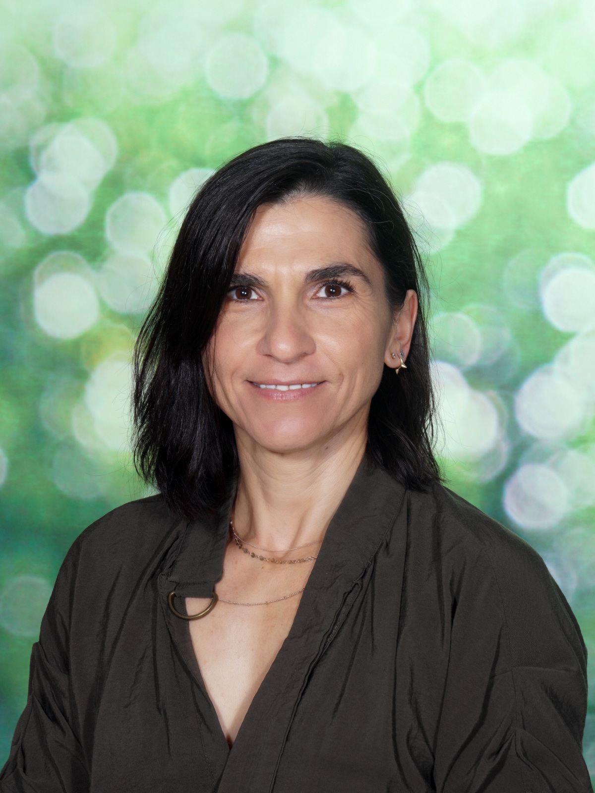

Curriculum Vitae
María Magdalena Santana Gutiérrez

Datos personales
Fecha de nacimiento: 09/10/1970
Dirección: La Orilla, 74. La Oliva
Teléfono: 661626238
Correo: mmsg09@gmail.com
Titulación Académica
- Técnico Superior en Gestión de Dramas del Primer Mundo
- Intérprete de Lenguaje Corporal nivel C2
Experiencia Laboral
- Directora de Equipo - Melodramáticos Unidos SA desde 2000 hasta la actualidad
- Responsable del departamento de Ahogados en un vaso de agua -Melodramáticos Unidos SA (1998-2000)
Habilidades
- Proactiva
- Habilidades organizativas
- Capacidad analítica